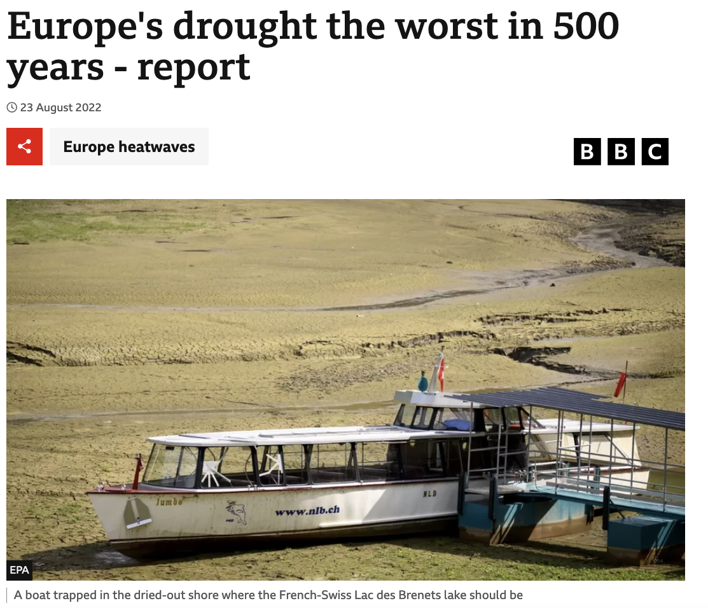

Modelling Environmental Extremes
What are your thoughts?

Environmental extremes in our life
Environmental extreme events are closer than you think…

Environmental extremes in our life

Defining an extreme
- The first thing we have to consider is what actually represents an extreme observation.
- This will vary depending on the context of the dataset.

- We could just look at the biggest (or smallest) values.
- If so, over what time period? Annual maximum? Over the whole dataset? Both?
Defining an extreme
- The first thing we have to consider is what actually represents an extreme observation.
- This will vary depending on the context of the dataset.

- We could just look at the biggest (or smallest) values.
- If so, over what time period? Annual maximum? Over the whole dataset? Both?
- Other times, it may be all observations above a certain threshold.
- But then how to select the threshold?
The GEV Distribution
\[G(x) = \exp \left( - \left[ 1 + \frac{\xi (x - \mu)}{\sigma} \right]^{-\frac{1}{\xi}} \right)\]
- If \(\xi < 0\) then we have the Weibull distribution.
- If \(\xi > 0\) then we have the Fréchet distribution.
- As \(\xi \to 0\) then we have the Gumbel distribution.

Generating samples from Block Maxima in R
generate.max <- function(N = 50,n=5,
rdist,param=c(0,1),
a=1,b=0,seed=pi){
set.seed(seed)
Mn <- c()
for(i in 1:N){
sample <- rdist(n,param[1],param[2])
Mn[i]<- (max(sample)-b)/a
}
hist(Mn,breaks = "FD",
col="lightblue",proba=T,
main="Histogram of maximums",xlab='')
}
generate.max(N=50000,n=5,rdist=runif,
param=c(0,1),a=1/5,b=1)
curve(ExtremalDep::dGEV(x,-1,1,-1),type="l",
n=500,add=T,lwd=3,lty=1,col=2)
Maxima and Minima
- Communication of extremes typically focuses on maxima (or minima).
- Environmental or climate events are often described as the “worst/highest/lowest in X years”.


Example - Venice Sea Levels
- We have daily sea level measurements from 1931-1981.
- The plot below shows the 10 highest sea level measurements from each year.

Example - Venice Sea Levels
- We can apply a block maxima approach, treating each year as a block.
- This requires us to identify and model the yearly maximum.

Return Level Plot
- We can assess the suitability of the GEV distribution using a return level plot.
- This involves commuting the return level at various return periods, and comparing it to the theoretical result under the GEV.

Extending Block Maxima - \(k\)-largest
- Looking at just the maxima means we throw away a lot of data, making it harder to accurately estimate parameters.
- We could instead follow an approach which models the \(k\) largest values within a block.

Peak Over Threshold
- Again, let \(X_1, \ldots, X_n\) be a sequence of independent random variables with a common distribution function \(F\).
- We can consider our extreme values in terms of their threshold excess (how much they exceed the threshold by).
- For an extreme value \(X > u\), its threshold excess is given as \(y = X - u\).

Peak Over Threshold
The probability of threshold excess of size \(y\) is given by
\[ \begin{aligned} P(X > u+y~|~X > u) &= \frac{P(X>u+y)}{P(X>u)} \quad\text{where } y > 0\\ &= \frac{1 - F(u + y)}{1 - F(u)} \end{aligned} \]

Example - Fort Collins, Colorado
We compare three different choices of threshold below (\(u = 0.5, 1.0, 1.5\)) to show the importance of getting the choice right.

| \(u\) | \(\% > u\) | \(n > u\) |
|---|---|---|
| 0.5 | 2.08 | 759 |
| 1.0 | 0.58 | 213 |
| 1.5 | 0.25 | 91 |
Mean Residual Life Plot
- We can fit a mean residual life plot to identify a sensible choice of threshold.
- It appears that a value of \(u\) somewhere between 1.2 and 1.8 would be an appropriate choice here - this is where the plot appears to be linear.

Sensitivity Analysis
- We can also carry out a sensitivity analysis to see the effect of choosing different threshold values on the estimated model parameters.
- The plot below shows the parameter estimates at different thresholds - they seem fairly robust.